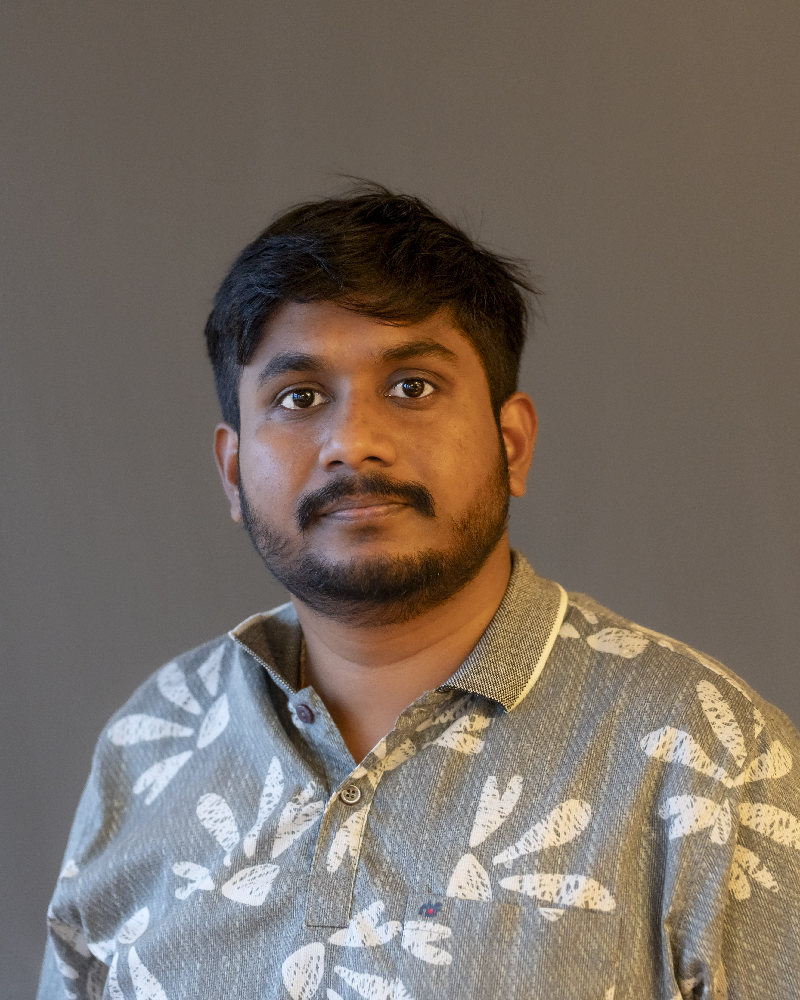

We use Density Functional Theory, Machine-Learned Molecular Dynamics, and High-Performance Computing to understand, predict, and design advanced functional materials — with a focus on amorphous semiconductors and phase-change memory devices.
About
CHAOS Lab is a computational materials research group at the Department of Mechanical and Materials Engineering, University of Turku, led by Academy Research Fellow Dr. Konstantinos Konstantinou.
Our work sits at the intersection of condensed-matter physics, materials science, and machine learning. We develop and apply atomistic simulation methods to reveal how the disordered atomic structure of amorphous materials governs their electronic, optical, and memory properties.
A particular focus is phase-change memory (PCM) materials — chalcogenide alloys such as Ge₂Sb₂Te₅ — which encode binary data as structural phase transitions between amorphous and crystalline states.
What we investigate
01
Atomistic modelling of amorphous chalcogenides (Ge₂Sb₂Te₅, GeTe, Sb₂Te₃) to reveal structural topology, electronic states, and the microscopic origin of order–disorder transitions exploited in PCM devices.
02
Identifying mid-gap defect states and charge-trapping centres in amorphous semiconductors using hybrid-functional DFT — critical for understanding resistance drift and multilevel memory reliability.
03
Simulating ion-irradiation cascades and thermal-spike events in amorphous PCM materials to understand why they are intrinsically radiation-hard — with direct applications in space-grade non-volatile memories.
04
Connecting atomistic structure to device-level properties — drift, SET/RESET switching, and multi-level encoding — to guide the engineering of next-generation storage-class and neuromorphic memory technologies.
Principal Investigator
Academy Research Fellow · Research Council of Finland
Dept. of Mechanical and Materials Engineering · University of Turku
Dr. Konstantinou leads CHAOS Lab's research in computational materials modelling, with a focus on amorphous semiconductors, phase-change memory materials, and machine-learned molecular dynamics. His work has produced key insights into the defect structure, radiation tolerance, and electronic properties of chalcogenide alloys used in next-generation non-volatile memory devices.
His current interests span defects in amorphous semiconductors, resistive switching memories, machine-learned molecular-dynamics simulations, charge-trapping processes, electronic excitations, and the atomistic simulation of phase-change materials for aerospace applications.
People

Biswarup Biswas
Doctoral Researcher · 2025–present
Computational Modelling of Ion Irradiation Effects in Phase-Change Memory Materials memory materials.
Alumni Name
PhD · Graduated 2023
Thesis: Short thesis title here
Now: Position · Organisation
Interested in joining? See the opportunities below ↓
Selected output
Electronic and thermal properties of the phase-change memory material, Ge₂Sb₂Te₅, and results from spatially resolved transport calculations
Solid State Sciences
Partial melting and structural disorder in models of irradiated amorphous Ge₂Sb₂Te₅
physica status solidi (RRL) – Rapid Research Letters · 2025
Atomistic modeling of charge-trapping defects in amorphous Ge–Sb–Te phase-change memory materials
physica status solidi (RRL) – Rapid Research Letters · 2023
Simulation of phase-change-memory and thermoelectric materials using machine-learned interatomic potentials: Sb₂Te₃
physica status solidi (b) · 258 (10), 2000416
Revealing the intrinsic nature of the mid-gap defects in amorphous Ge₂Sb₂Te₅
Nature Communications · 10, 3065
Origin of radiation tolerance in amorphous Ge₂Sb₂Te₅ phase-change random-access memory material
Proceedings of the National Academy of Sciences · 115 (21), 5353–5358
Full list on Google Scholar ↗
Opportunities
We welcome enquiries from motivated students and researchers interested in computational materials science, phase-change memories, and machine-learning for atomistic simulations. If you are interested in a doctoral or postdoctoral position, or a research collaboration, please get in touch directly.
konstantinos.konstantinou@utu.fiCHAOS Lab · Dept. of Mechanical and Materials Engineering
University of Turku · Vesilinnantie 5 · 20500 Turku · Finland